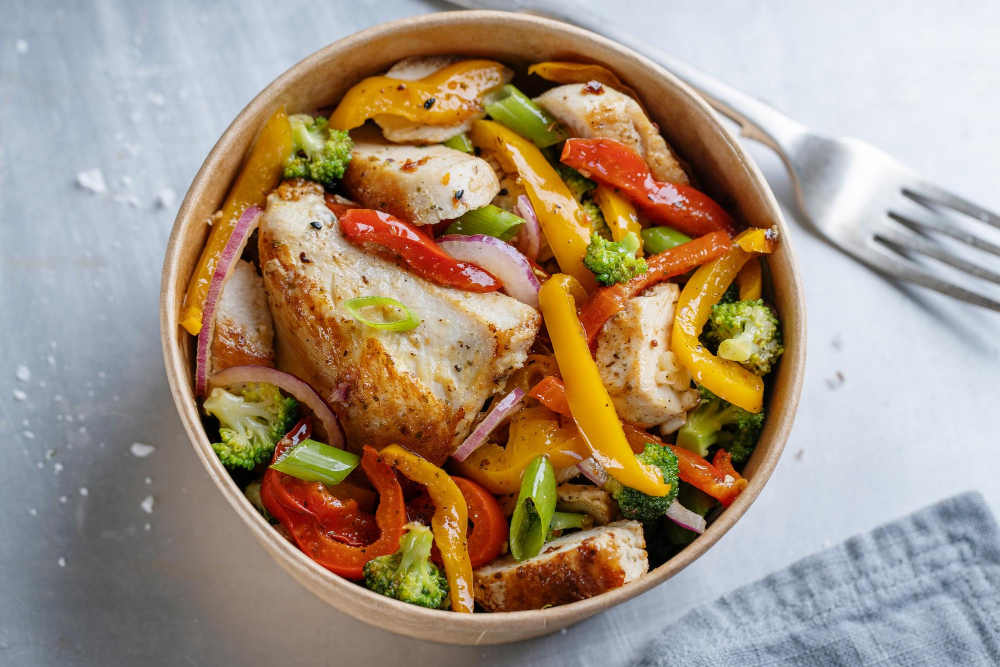

Fried Chicken Bowl

Description
This chicken mashed potato bowl is a quick and easy comfort meal with chicken,
mashed potatoes, corn, and cheese.
Ingredients
- vegetable oil for frying
- 4 pieces frozen, breaded pre-cooked chicken strips
- 2 cups prepared mashed potatoes
- 6 ounces shredded Cheddar cheese
- 1 (14 ounce) can whole kernel corn, drained
Steps
- Heat oil in a deep fryer or large saucepan to 350 degrees F (175 degrees C).
- Fry chicken strips in hot oil until warmed through, 2 to 3 minutes. Transfer chicken
to paper towel-lined plates using a slotted spoon. Cut chicken into bite-sized chunks.
- Layer mashed potatoes, Cheddar cheese, corn, and chicken into individual serving bowls.
Home